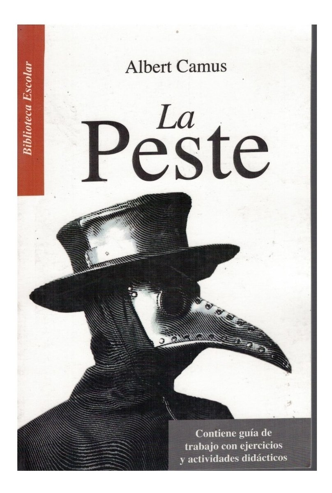
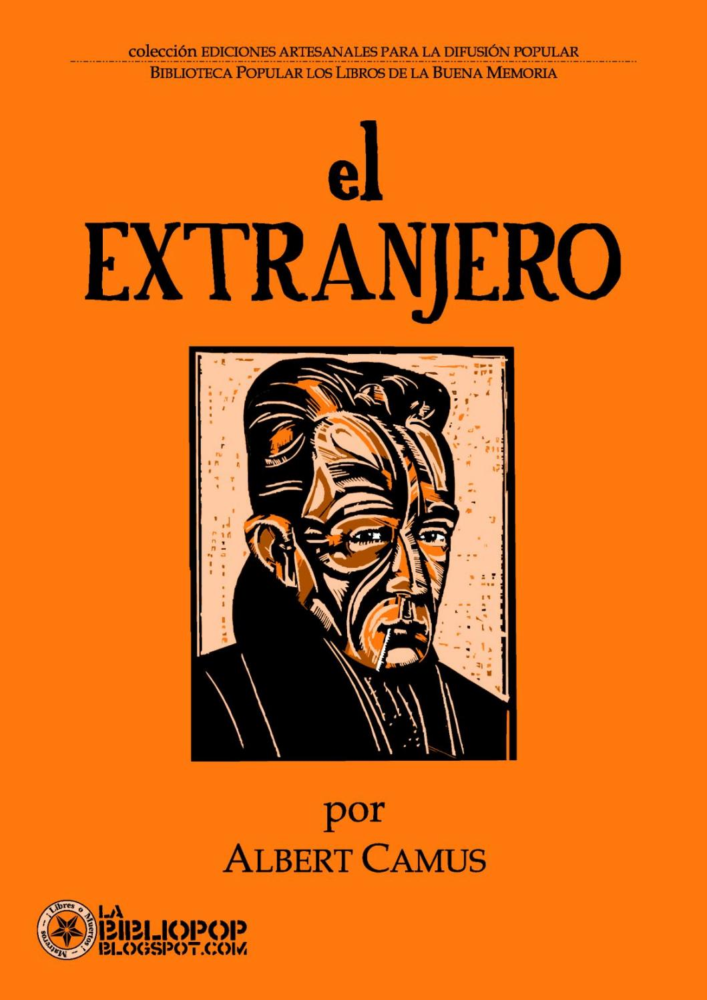
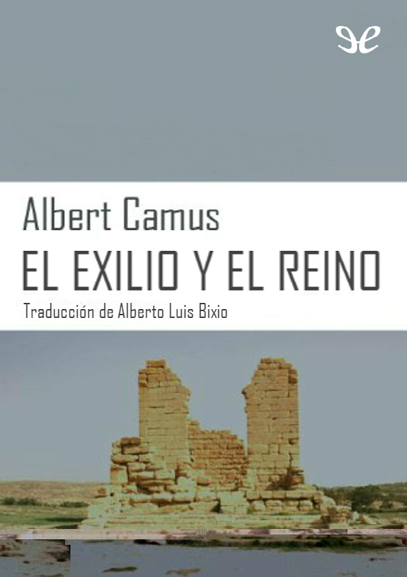

7 de noviembre de 1913-Villeblevin, Francia, 4 de enero de 1960) fue un novelista, ensayista, dramaturgo, filósofo y periodista francés nacido en Argelia. Su pensamiento se desarrolla bajo el influjo de los razonamientos filosóficos de Schopenhauer, Nietzsche y el existencialismo alemán.
Reconocido por sus grandes aportes literarios, Albert Camus desarrolló sus obras basadas en una ideología humanista fundada en la conciencia del absurdo de la condición humana. Por ello, se hizo merecedor en 1957 del Premio Nobel de Literatura
Editorial Losada
Editorial Hispano America
Editorial Del Sur
